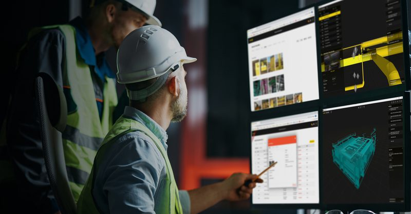

Software for Roofing and Solar Paneling Contractors
Contractor SaaS, Node.js, React, TypeScript, Docker.
Elinext blended into the client's Agile team for continued features.
Read the case studyPrepared for David Mitchell
We saw XYZ Reality hiring for a Senior Backend Engineer. That points to pressure around scalable Node.js APIs and PostgreSQL. It also touches field data, 360 capture, Atom, and the platform.

Your site says XYZ Platform links schedules, models, resources, costs, and field data. It also connects 360 images and real-time site updates. The Backend role says the next limit is not demand. It is the live data path behind that product. Node.js APIs and PostgreSQL must stay fast as capture grows. If sync slows, field teams lose trust in the data.
Your Project Controls page says the 4D model updates from field data. First, map each capture-to-model sync path. Then mark slow writes and risky joins before more backend code ships.
XYZ Mobile release notes mention overlapping capture points on floor plans. Treat that as a data-shape issue too. Add checks for duplicate points, room links, and offline retry conflicts.
Elinext would work under your product or engineering lead. Six weeks, weekly demos, and one clear handover plan.
Elinext is a full-cycle software development company, active across global markets since 1997. We have about 700 in-house specialists, with no freelancers and no subcontractors. Our teams cover mobile, backend, frontend, QA, DevOps, AI/ML, business analysis, and delivery management. For complex, security-sensitive products, our work is backed by ISO 9001 and ISO 27001. Teams have delivered for Siemens, Broadcom, Volkswagen, TRUMPF, TUI, TransPerfect, and Parrot. Here, that means backend, QA, and DevOps capacity under your product team, without changing ownership.
Contractor SaaS, Node.js, React, TypeScript, Docker.
Elinext blended into the client's Agile team for continued features.
Read the case study
Real-time physical and virtual asset monitoring.
Built for global users, with PostgreSQL and React.
Read the case study